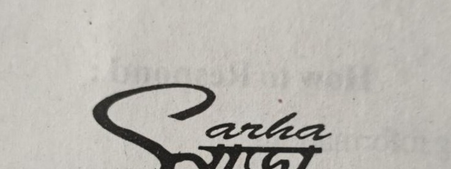

আর্থিকভাবে অনগ্রসর শিক্ষার্থীদের শিক্ষাজীবন এগিয়ে নিতে সহায়তা।
বইপত্র ও প্রয়োজনীয় শিক্ষাসামগ্রীতে সহযোগিতা।
শিক্ষার্থীরা যাতে পড়াশোনা চালিয়ে যেতে পারে, সেই লক্ষ্যকে গুরুত্ব দেওয়া।
প্রয়োজনের সময় সমাজের মানুষের পাশে থাকার চেষ্টা।